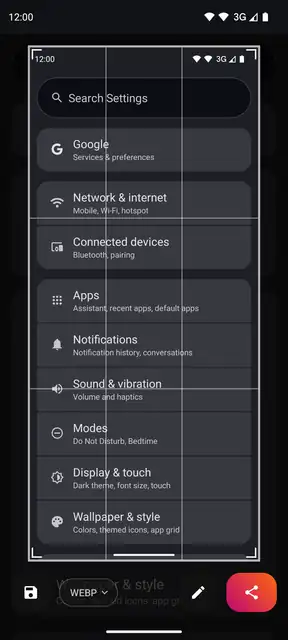
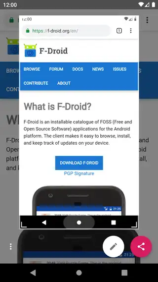

Screenshot Assistant
صور وتصميم
Screenshot Assistant replaces the digital assistant app with one job: take a screenshot when you use the assist gesture, then let you crop, draw on and share it. Setup: 1. Install the app and open it. 2. Pick it under Settings > Apps > Default apps > Digital assistant app, and turn on "Use screensho
✓ ترخيص مفتوح (Apache-2.0) · آخر تحديث: 2026-11-20
v26.11.8الإصدار
2.1 MBالحجم
Apache-2.0الرخصة
Open in Kanzتحميل APK (2.1 MB)
Download APK
SHA-256: 976930e8002b01acc382439efaf755041d4f22d9a370918e15efca1ef4670ce4


امسح الكود لفتح صفحة التطبيق
Scan to open this app page
لو كنز مش متثبت عندك: نزّل متجر كنز.
Not installed? Get the Kanz store.